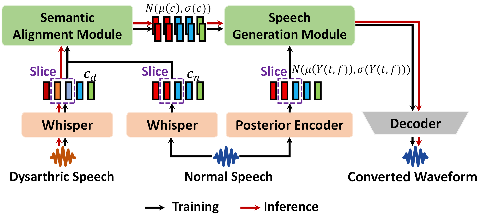

In this demo page, we report audio demos generated by T-SAM on the CDSD and MDSC Mandarin dysarthric corpus.
Abstract
Dysarthric voice conversion (DVC) aims to transform dysarthric speech into a more natural and intelligible form. Existing DVC methods typically rely on complex auxiliary strategies or text supervision to recover linguistic content, and their performance on Mandarin remains limited. The tonal nature of Mandarin, along with its rich prosody, homophones, and polyphones, further increases the difficulty of modeling dysarthric speech. To address these challenges, we propose the Text-independent Semantic Alignment Model (T-SAM), a unified framework tailored for Mandarin DVC. Specifically, T-SAM aligns dysarthric and healthy self-supervised speech representations through a Semantic Alignment Module (SAM), and synthesizes natural speech using a Speech Generation Module (SGM). A Duration Predictor (DP) is further incorporated to model duration patterns from the posterior distribution and guide natural prosody generation. Moreover, a Syllable-rate Consistency Loss (SCL) is introduced to enhance temporal stability and prosodic coherence. Extensive experiments on the CDSD and MDSC Mandarin corpora demonstrate that T-SAM substantially improves perceptual quality and intelligibility. In speaker-dependent settings, T-SAM raises MOS from 2.33 to 4.23 and reduces relative CER by 52.97%. For speaker-independent evaluations, using a character-length–based protocol, T-SAM achieves the highest MOS across all character-length groups, increasing MOS from 2.36 to 3.20, with consistent CER reductions and a maximum relative decrease of 29.93% for short utterances.
Diagram and example of T-SAM
System Comparison
- Original: Original dysarthric speech.
- Reference: Healthy speech.
- ASR-TTS: ASR-TTS system consists of an open-sourced ASR model (Whisper) and a TTS method (VITS), where this Whisper model is the same as the SSL feature extraction module of our framework.
- Seed-VC: a novel framework that addresses timbre leakage, insufficient timbre representation, and mismatches between training and inference tasks by introducing an external timbre shifter during training to perturb the source speech timbre, mitigating leakage and aligning training with inference.